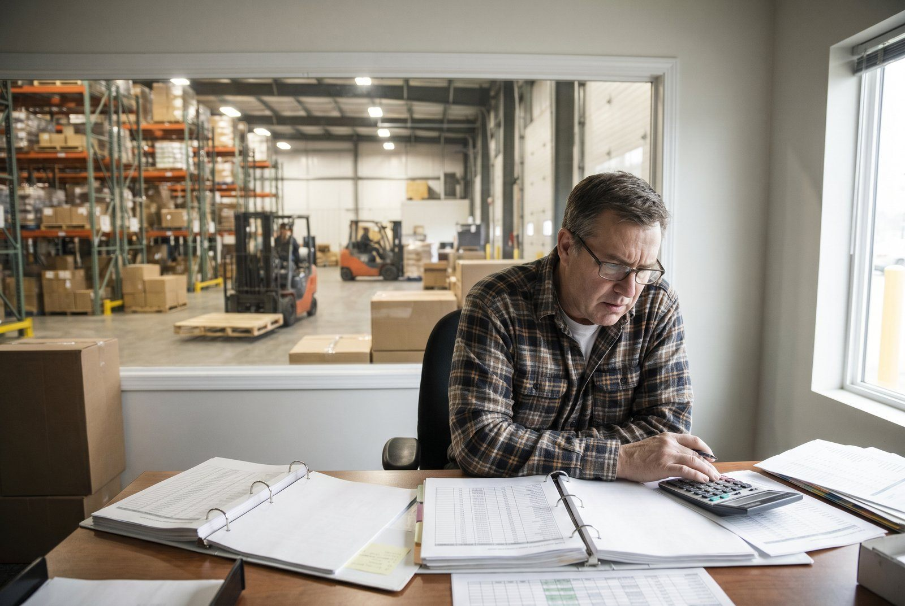

Et lagerbudget er ikke kun husleje og løn. De virksomheder der kun budgetterer det synlige, er altid overraskede. Her er den komplette budgetstruktur og de 5 poster du glemmer.
Budgetstruktur: faste overheadomkostninger
| Post | Mellemstor lager (typisk) |
|---|---|
| Husleje (400-600 kr./m², 1.000 m²) | 40.000-50.000 kr. |
| El og varme | 8.000-15.000 kr. |
| Forsikring | 3.000-6.000 kr. |
| WMS/systemer (licenser) | 5.000-15.000 kr. |
| Vedligehold udstyr | 2.000-5.000 kr. |
| Fast subtotal | ~65.000-95.000 kr. |
👉 Vil du gennemgå dit lagerbudget? Kontakt SmartPack
Variable omkostninger (skalerer med ordrer)
| Post | Per ordre-estimat |
|---|---|
| Løn (pluk + pak) | 12-18 kr. |
| Emballage | 4-8 kr. |
| Fejlhåndtering (0,5% fejlrate) | 1,75 kr. |
| Returnering (18% returrate) | 4,86 kr. |
| Variabel subtotal | ~23-33 kr./ordre |
Samlet CPO ved 200 ordrer/dag: Fast: 80.000 / 4.400 ordrer/md = 18,18 kr. + Variabelt: 28 kr. = ~46 kr./ordre total
Samlet årligt budget ved 200 ordrer/dag: 960.000 kr. (fast) + 730.000 kr. (variabelt) = 1.690.000 kr./år ekskl. forsendelse. Inkl. forsendelse (40 kr. x 200 x 365): 4.610.000 kr./år.
De 5 poster de fleste glemmer at budgettere
1. Rekruttering og turnover
43% turnover x 30-50.000 kr./hoved = 85.000-215.000 kr./år for et team på 5 medarbejdere. Det står sjaldent som en linje i budgettet, men det er en årlig, reel omkostning.
2. WMS-integration og vedligehold
Løbende IT-opgaver, API-vedligehold og systemopgraderinger koster typisk 15-30.000 kr./år ekstra ud over licensprisen.
3. Sæson-overkapacitet
Ekstra emballage, vikarer og overtid i Q4 kan udgøre 15-25% af Q4-driftsbudget. Det er ikke en overraskelse, det er forudsigeligt.
4. Beskadigelse og svind
1-3% af varelagerværdi per år. På et 2 mio. kr. varelager er det 20.000-60.000 kr./år.
5. Uddannelse og onboarding
10.000-20.000 kr. per ny medarbejder. Med 43% turnover og 5 i teamet er det en fast årlig post på 43.000-86.000 kr.
Budgetprocessen trin for trin
- Sæt ordrervolumen-prognose: Månedlig prognose for 12 måneder inkl. sæsonsvingninger
- Beregn variabel del: Prognose-ordrer x din anslåede CPO
- Tilføj fast overhead: Månedlig fast post er uafhængig af volumen
- Bufferposter: General buffer 5-8% af total, peak season buffer 15-20% af Q4-budget, teknisk gæld buffer 10.000-25.000 kr./år
- KPI-mål: Hvad er dit CPO-mål for kvartalet? Budget og mål hænger sammen.
Typiske fejl i lagerbudgettet
- Budgetterer kun det eksisterende: Et godt budget planlægger for de breakpoints der rammes i budgetperioden.
- Ingen sæson-buffer: Q4-ekstraomkostninger er forudsigelige, ikke overraskende.
- Ser lager og logistik separat: Forsendelsesomkostninger, returner og kundeservice er del af det samlede logistics-budget.
Sådan understøtter SmartPack
SmartPack giver dig CPO-opdeling i realtid som direkte input til budgetprocessen. Du ser den faktiske cost per post, kan sammenligne med budget og får et bedre grundlag for næste budgetrunde.